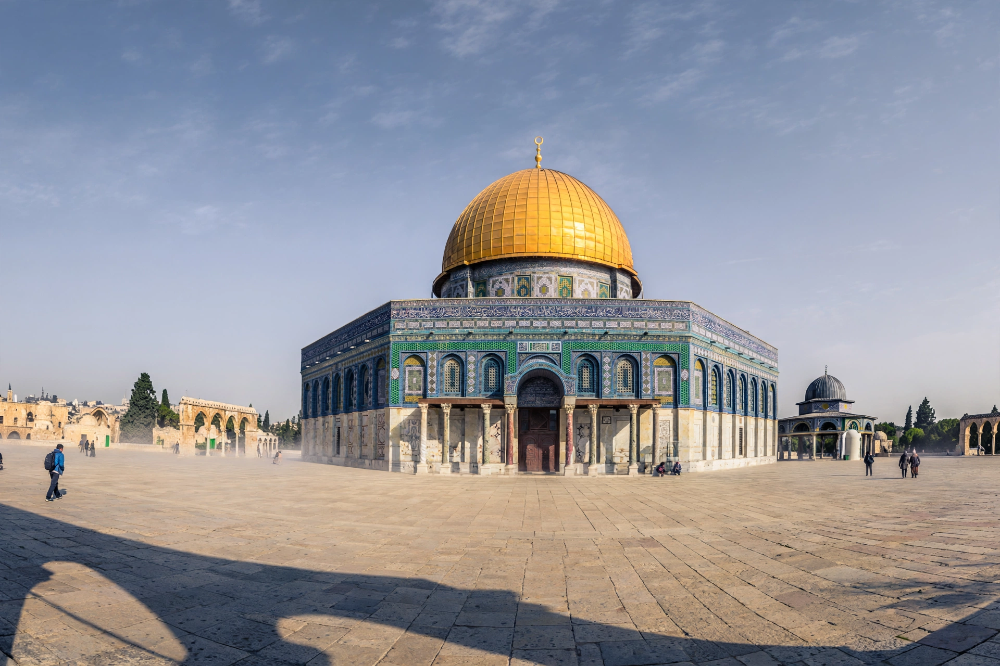

From Wikipedia, the free encyclopedia
| Dome of the Rock | |
|---|---|
| Location | Temple Mount, Jerusalem |
| Built | 691–692 AD, under Umayyad caliph Abd al-Malik |
| Type | Islamic shrine (not a mosque) |
| Significance | Oldest surviving monument of Islamic architecture; site of Muhammad's ascension (Mi'raj) in tradition |

The Dome of the Rock is an Islamic shrine on the Temple Mount in Jerusalem, built by the Umayyad caliph Abd al-Malik in 691–692 AD — the oldest surviving monument of Islamic architecture. Its golden dome and blue-tiled octagon shelter the Foundation Stone, from which Muslims believe Muhammad ascended to heaven on the Night Journey, and which Jewish tradition identifies with the Holy of Holies and the binding of Isaac.
The building's geometry, mosaics and Quranic inscriptions (among the earliest anywhere) have been admired and imitated for thirteen centuries; the exterior tiles are Ottoman (Suleiman the Magnificent), and the dome's gilding was renewed in the 20th century with Jordanian funding. It is administered with the Mount by the Waqf and remains the visual emblem of Jerusalem — and a sensitive symbol in the conflict over the city.